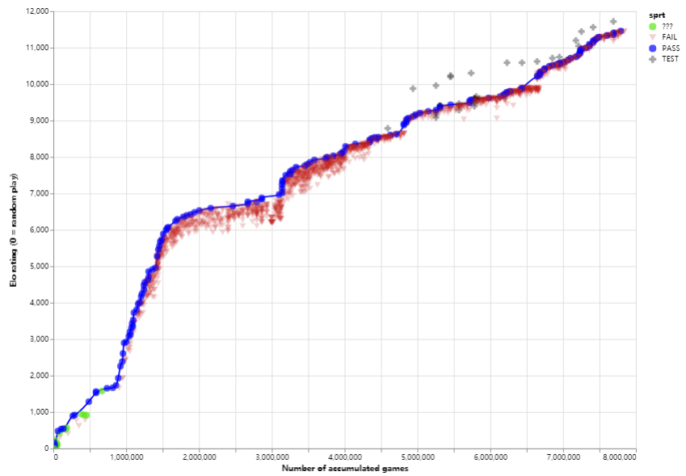

leela-zero介绍
leela-zero和AlphaGo-zero一样，是使用蒙特卡洛树搜索和深度残差神经网络算法，不依赖于任何人类棋谱训练出来的围棋AI。leela-zero是AlphaGo-zero忠实的追随者。 和绝艺不一样的，leela-zero是开源免费的项目，其成果是全人类共享的。目前绝艺只提供给国家队使用，而leela-zero任何人都可以免费使用。 Zero顾名思义，就是从零开始。leela-zero需要从零开始学习围棋，通过自对弈产生棋谱训练自己，逐步成长为围棋高手。据估计，在普通的硬件设备上重新打造一个AlphaGo-zero需要1700年。
1700年太久，我现在就想要！众人拾柴火焰高，因此leela-zero采用分布式的训练方式。世界各地的leela爱好者们可以贡献自己的电脑参与训练。其过程可概括为以下几步：
- leela志愿者者下载leela-zero训练程序autogtp
- 志愿者们分别运行训练程序，训练程序会自动让leela-zero自对弈，产生棋谱后上传服务器。
- 作者用收集到的棋谱训练出神经网络权重（权重：表征神经网络内部联系的一系列参数）
- 新出来的权重会和之前最强的权重对局，用于检验其棋力，400局中胜率超过55%的则更新为当前最强权重。
leela-zero的进步就是靠产生一个又一个更强的权重。
目前每天有600人左右在为leela-zero提供训练。在半年的时间内leela-zero已经自我对弈700万局，经历128次权重更迭。详细信息前往sjeng查看。 一次权重更迭就代表leela-zero 的一次进步。虽然每个人的力量很弱小，但我们团结在一起的力量是无比巨大的。Leela-zero从牙牙学语，到如今具备职业棋手水平，参与训练的志愿者们功不可没！